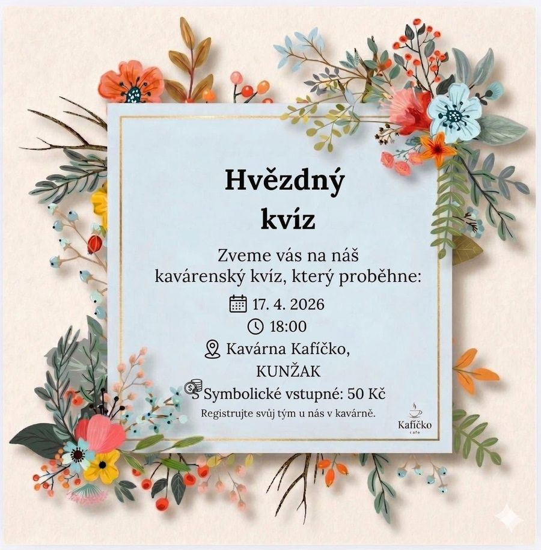
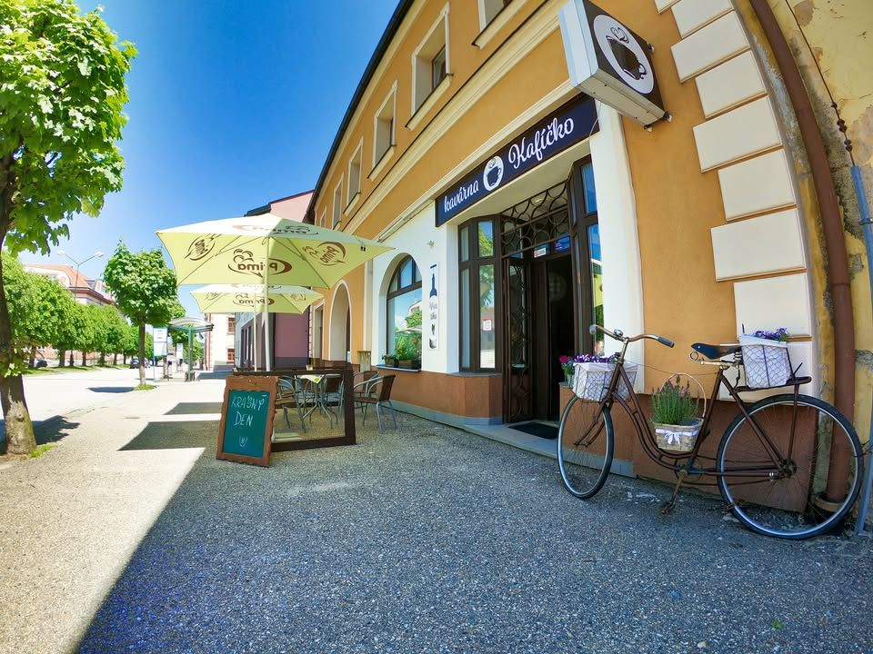
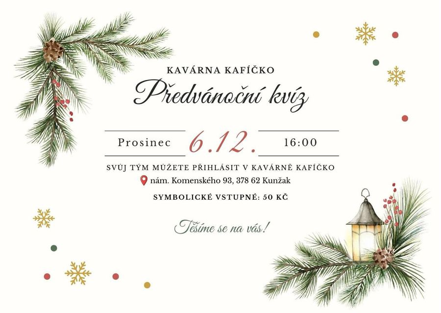
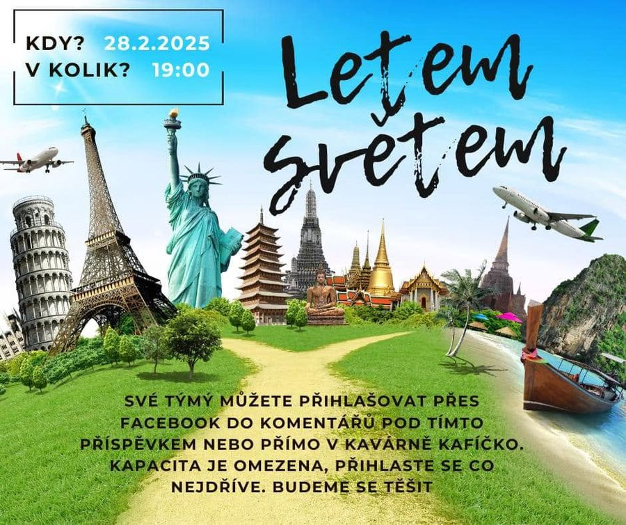
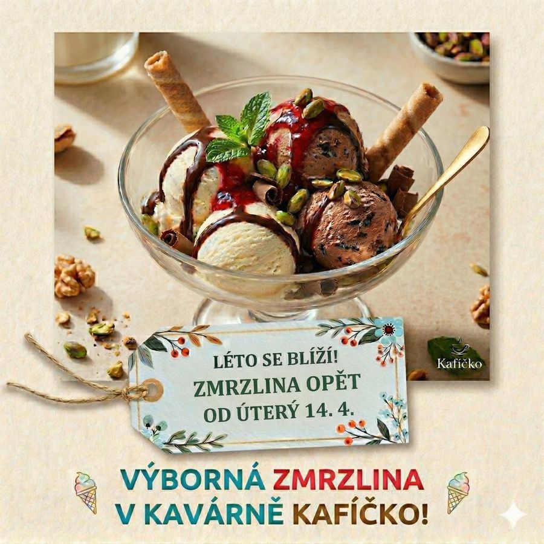
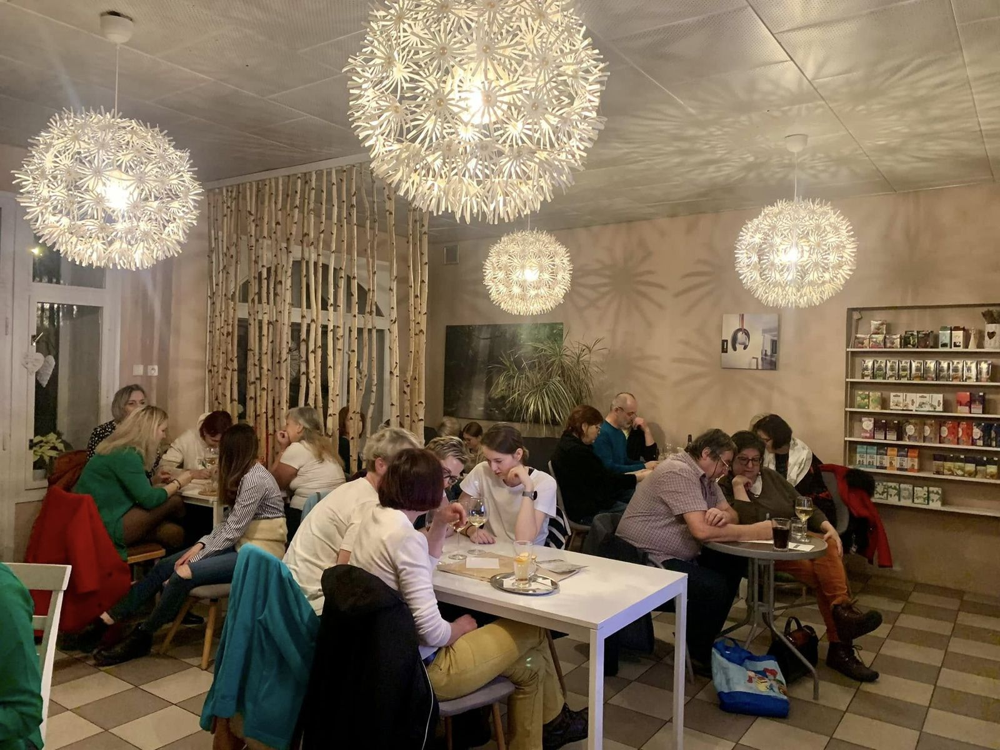
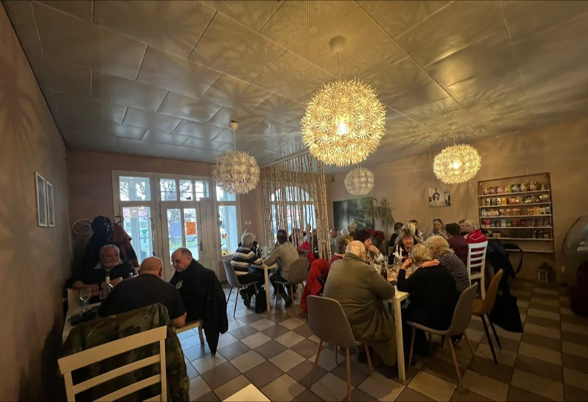
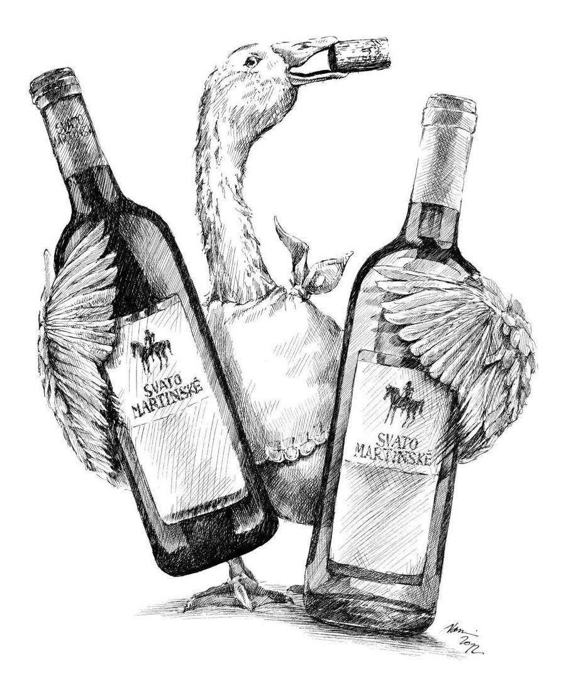

17. dubna, 18:00
Hvězdný kvíz
Kavárenský kvíz pro týmy. Symbolické vstupné 50 Kč, tým se registruje u nás v kavárně.
proběhloČeská Kanada, přímo na náměstí
Italská káva Moak, zákusky z cukráren v Telči, Mrákotíně a Zahrádkách, zmrzlina, chlebíčky a dobré moravské víno. Letní terasa s výhledem na kostel sv. Bartoloměje.
Otevírací doba níže

U nás na náměstíDnes na tabuli:cappuccino, zákusek z Telče a kousek klidu
4,7z 19 hodnocení
Co u nás dostanete
Jako ta křídová před dveřmi. Kávu vaříme z italské Moak, zákusky vozíme od cukrářů z okolí a na víno jezdíme na jižní Moravu.
náměstí Komenského 93
Ceny najdete u pultu. Kafíčko v Kunžaku · přijďte na kus řeči
Tady se Kunžak potkává
Kavárenské kvízy pro týmy, ochutnávky vína a sezónní dobroty. Tohle jsou akce, které jsme u nás v posledních měsících měli.

17. dubna, 18:00
Kavárenský kvíz pro týmy. Symbolické vstupné 50 Kč, tým se registruje u nás v kavárně.
proběhlo
6. prosince, 16:00
Adventní kvíz pro týmy. Symbolické vstupné 50 Kč, tým se hlásí v kavárně.
proběhlo
28. února, 19:00
Cestovatelský kvíz. Kapacita omezená, přihlašovalo se v komentářích na Facebooku.
proběhlo
od dubna
Každé jaro znovu otevíráme zmrzlinu. Nejlepší na terase s výhledem na kašnu.
každý rokDalší kvíz se chystá
Kapacita bývá omezená. Tady si místo zamluvíte za půl minuty, bez komentářů pod příspěvkem.
U nás



Z jižní Moravy do Kunžaku
K zákusku sklenička, k večeru láhev. Vína vozíme od tří rodinných vinařství a pořádáme ochutnávky.
Přijďte všichni
Místo na hraní, ať si rodiče v klidu dopijí kávu.
Se psem můžete k nám dovnitř i na terasu.
Posezení venku na náměstí, s výhledem na kostel i kašnu.
Zastávka po cestě na kole, pěšky nebo k Vysokému Kameni.
Výhled z terasy
Z terasy máte přímo na očích dominantu náměstí, kostel sv. Bartoloměje ze 14. století, a rokokovou kašnu vytesanou z jediného kusu kamene.
V létě tu sedíte pod slunečníkem se zmrzlinou, v zimě uvnitř pod lampami, které vypadají jako pampelišky.
Kde nás najdete
Zimní provozní doba. V létě máme otevřeno déle.
náměstí Komenského 93
378 62 Kunžak
Proč jste dostali tenhle odkaz
Jsme Tomáš a Martin Filsochovi z filsns s.r.o. Ukázku jsme postavili nezávazně a zadarmo z toho, co máte na Facebooku a na Firmy.cz: fotky, plakáty kvízů, nabídku i otevírací dobu.
Dnes vás na internetu najde jen ten, kdo má Facebook. Turista, který v Kanadě hledá „kavárna Kunžak", dostane jen katalogy s různými otevíracími dobami.
Kdyby vás to nezajímalo, nic se neděje. Stačí neodpovědět a víc se neozveme.